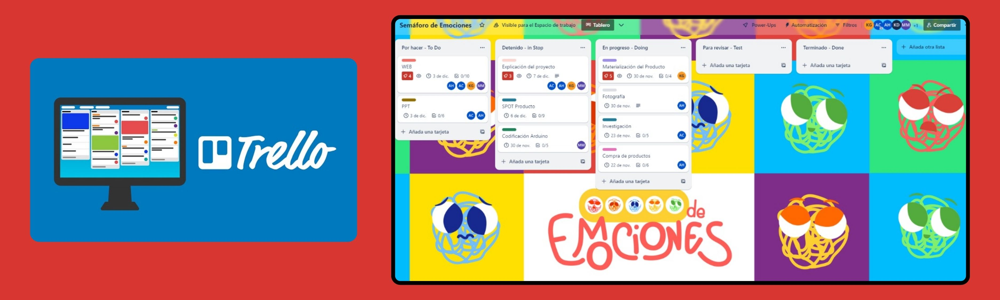

Semana 11
Esta clase pasó a ser virtual por un inconveniente de salud que presentaba el profesor, la cual empezó dando unas indicaciones de como realizar correctamente un informe, luego el profesor procedió a mostrar cuáles eran los informes destacados para él y entre los seleccionados se encontraban 2 compañeras de mi equipo (kathie y Alejandra), por lo cual me sentí superemocionada que personas tan brillantes formen parte de mi equipo.
Después el profesor decidió darnos una oportunidad para mejorar los informes, y para eso procedió a separarnos por grupos aleatorios, para que de esa manera podamos ayudarnos entre sí y mejorar la calificación ya puesta.
Ese día presente problemas de energía en mi casa y no pude presentar la mejora de mi informe, pero tampoco obtuve una mala calificación en la primera revisión, por esa parte me mantuve tranquila.
 CLASE VIRTUAL:Con esta clase empezamos el último promedio del ciclo académico, iniciamos con las recomendaciones e instrucciones brindadas por el profesor, para lo que quedan de las últimas semanas, ya que se implementará una nueva normativa para la entrega de actividades, ahora se realizaran actividades semanales las cuales deben solo obtener 2 links, uno de los avances individuales que realizas en la página web del proyecto grupal y otro de la bitácora digital del curso. También nos brindó información de todo lo que tiene que contener y el orden de la página web del proyecto.
El profesor nos habló sobre una nueva metodología para poder organizarnos en equipo y no tener que procrastinar con las fechas de entrega de los trabajos, ahí fue cuando nos mostró el tablero Trello, cabe recalcar que ya conocía este tablero porque lo use anteriormente para otro curso.
Nos separó por salas por equipo donde teníamos que ejecutar nuestro tablero para poder designar tareas a cada uno de los integrantes del equipo.
Al finalizar la clase reviso lo que se avanzó en salas y al mostrarles el trabajo que realizamos le gustó tanto que no resistió y le tomo una captura al Trello realizado en equipo.